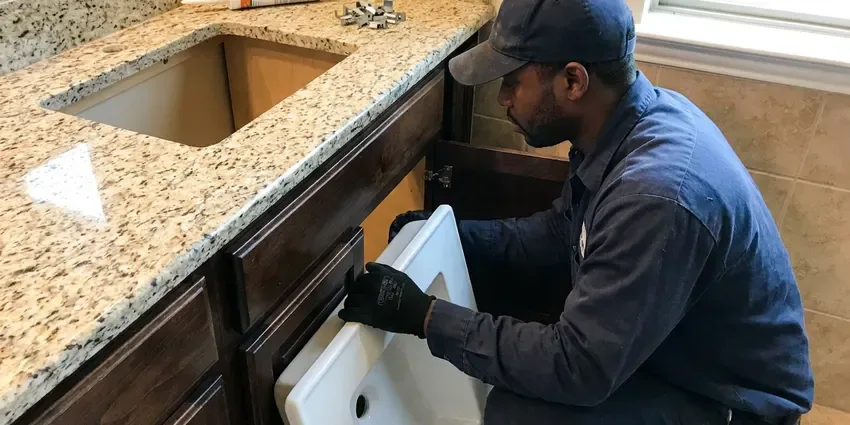

Bathtub Faucet Replacement in Enterprise, AL
For professional bathtub faucet replacement anywhere in Enterprise, AL, trust the experienced plumbers at BRV Plumbing.
- Fast, Reliable Service
- Licensed Plumbers
- Upfront Pricing
- Local Enterprise Experts

Professional Bathtub Faucet Replacement in Enterprise, AL.
Don't let a faulty faucet ruin your day, contact us for prompt service.
Reliable Bathtub Faucet Replacement for Homes in Enterprise, AL
Here at BRV Plumbing, we handle all aspects of bathtub faucet replacement, ensuring a watertight and functional installation. Whether it's a simple repair that's no longer cutting it or an upgrade, our plumbers in Enterprise, AL are equipped to get the job done right.
Our expertise includes:
- Precise removal of old faucet units.
- Expert installation of all faucet types.
- Thorough leak testing and system checks.

Additional Bathroom Plumbing Services in Enterprise, AL
From toilets to showers, our bathroom plumbing team in Enterprise, AL repairs, installs, and replaces every fixture with clean, code-compliant work.


Customers
Why Choose BRV Plumbing for Bathtub Faucet Replacement in Enterprise, AL?
Choosing BRV Plumbing for your bathtub faucet replacement means you're getting local expertise and a commitment to quality. We understand the specific plumbing challenges faced by homeowners in Alabama.
- Local Knowledge, We know Alabama's water conditions and their impact on plumbing fixtures, recommending the best faucets for longevity.
- Skilled Technicians, Our plumbers are trained to handle all major faucet brands and installation complexities, ensuring a perfect fit.
- Transparent Pricing, You'll receive a clear, upfront quote before any work begins, so there are no surprises.
Citywide Coverage
BRV Plumbing proudly serves every neighborhood in Enterprise for all your bathtub faucet replacement needs. No matter where you're located, our team is prepared to deliver prompt and efficient service.
Experienced Team
Our team of licensed plumbers brings years of focused experience in bathtub faucet replacement to every job. They're adept at diagnosing issues and executing precise installations.
Safety-First Approach
Safety is our top priority during every bathtub faucet replacement, ensuring all work adheres to Alabama plumbing codes. We take precautions to protect your home and our technicians.
Trusted Certified Enterprise Plumbing Services Professionals
At BRV Plumbing, we take pride in providing certified plumbing services throughout Enterprise, AL. Backed by recognized industry credentials, our experienced plumbers combine technical skill with genuine customer care. Whether it is repair, installation, or maintenance, we follow strict safety and quality standards to deliver long-lasting results you can trust.
Call Us Now PHCC Plumbing Contractor Recognition
PHCC Plumbing Contractor Recognition Better Business Bureau (BBB) Accreditation
Better Business Bureau (BBB) Accreditation Angi Certified Pro
Angi Certified Pro ISO 9001 Quality Management Certification
ISO 9001 Quality Management CertificationDependable Bathtub Faucet Replacement Services in Enterprise, AL
Leaky Bathtub Faucet Replacement in Enterprise
A persistent drip from your bathtub faucet can waste a lot of water and drive up utility bills. Often, internal cartridge or washer wear is the culprit, especially with older fixtures. If simple repairs aren't effective, a full replacement is usually the best long-term solution. Our team can quickly remove the faulty unit and install a new, water-efficient faucet, stopping those annoying drips for good.

Corroded Bathtub Faucet Replacement in Enterprise, AL
Hard water in many parts of Alabama can lead to significant corrosion and mineral buildup on and within bathtub faucets over time. This can cause reduced water flow, difficulty turning handles, and even discoloration. When corrosion is extensive, cleaning isn't enough. We specialize in replacing these compromised units with durable, corrosion-resistant models designed to withstand local water conditions.
Upgrading Bathtub Faucets in Enterprise
Beyond repairs, many homeowners in Enterprise choose to replace their bathtub faucets for aesthetic upgrades or improved functionality. Whether you're looking for a modern single-handle design, a classic two-handle setup, or a shower-tub combo, we can help. Our plumbers ensure proper sizing and connection to your existing plumbing, making your bathroom refresh smooth and efficient.
Delta Bathtub Faucet Replacement in Enterprise, AL
Delta is a popular brand known for its innovative designs and reliable performance. If your Delta bathtub faucet is beyond repair or you're upgrading to a newer model, BRV Plumbing offers expert replacement services. We have experience with Delta's various lines, from their standard models to their more complex thermostatic units, ensuring a correct and leak-free installation anywhere in Enterprise, AL.
Moen Bathtub Faucet Replacement in Enterprise
Moen faucets are a common fixture in many Enterprise homes, offering a blend of style and durability. When a Moen bathtub faucet needs replacing due to age, damage, or a desire for a new look, our skilled plumbers are ready. We handle all Moen models, ensuring that your new faucet functions perfectly and integrates seamlessly with your bathroom's style.
Emergency Bathtub Faucet Replacement in Enterprise, AL
A severely leaking or broken bathtub faucet can lead to water damage if not addressed quickly. If you're facing an emergency with your bathtub faucet in Enterprise, AL, don't hesitate to call BRV Plumbing. We prioritize urgent issues to prevent further damage to your home and restore your plumbing system as fast as possible, even outside of regular business hours.
Cost-Effective Faucet Replacement in Enterprise
Replacing a bathtub faucet can often be more cost-effective in the long run than repeated repairs, especially for older or heavily damaged units. We provide transparent pricing and help you choose a new faucet that fits your budget and needs. Our goal is to give you a long-lasting solution without unexpected expenses for homeowners in Enterprise.

Bathtub Faucet for Older Homes in Enterprise, AL
Older homes in Enterprise, AL often have unique plumbing configurations that require specific knowledge for bathtub faucet replacement. Our team is experienced with various plumbing setups common in vintage properties, ensuring that new faucets are installed correctly and compatible with existing pipes. We consider factors like pipe material and water pressure to guarantee a proper fit and function.
Bathtub Faucet Replacement Near Me in Enterprise, AL
For reliable bathtub faucet replacement near me in Enterprise, AL, look no further than BRV Plumbing. Our local plumbers are always ready to provide prompt and professional service right to your doorstep. We understand the urgency of a leaking or broken faucet and strive to be there when you need us most.
When you search for 'bathtub faucet replacement near me,' BRV Plumbing is the trusted choice for quality work and exceptional customer service. We pride ourselves on being a community-focused plumbing company, ensuring that every homeowner in Enterprise has access to expert plumbing solutions for their bathtub fixtures.
BRV Plumbing at a Glance
- Fully licensed plumbing team covering Enterprise, AL
- 24/7 emergency service with same-day scheduling
- Clear written estimates, no hidden fees
- 4.8-star rated by 549+ Alabama customers
Enterprise Map
Enterprise Information
- Population
- 30,271
- Area codes
- Local
- Service area
- Enterprise and communities within 40 miles
- Nearby
- Dothan, Montgomery, Prattville, Auburn
For homes in Enterprise, AL, where hard water can accelerate wear and tear on plumbing fixtures, professional bathtub faucet replacement ensures durability and prevents costly leaks.
Expert Services
Trust our professionals for reliable BRV Plumbing solutions in Enterprise, AL.
Our Specialized Plumbing Services in Enterprise, AL
At BRV Plumbing, we provide a complete range of plumbing services across Enterprise, AL. From leak detection to full system installations, our team ensures fast, precise, and affordable service for both residential and commercial properties. Explore our core services below:


How Our Bathtub Faucet Replacement Process Works in Enterprise, AL
We follow a clear, step-by-step approach to ensure your new bathtub faucet is installed correctly and functions perfectly.
Request a Quote
Contact BRV Plumbing by calling (256) 391-9413 to schedule an appointment. We'll discuss your needs and provide a clear, upfront estimate for your bathtub faucet replacement.
Old Faucet Removal
Our skilled plumber will carefully shut off the water supply and remove your old, faulty bathtub faucet. We ensure all parts are safely detached without damaging your tub or tiles.
New Faucet Installation
We'll expertly install your chosen new bathtub faucet, connecting all lines and ensuring a watertight seal. This includes proper placement of handles, spouts, and shower diverters if applicable.
Frequently Asked Questions About Bathtub Faucet Replacement in Enterprise
The cost of bathtub faucet replacement in Enterprise can range from $200 to $600, depending on the complexity of the installation, the type of faucet chosen, and any necessary pipe adjustments. This estimate typically includes labor and basic faucet models, but premium fixtures will increase the overall price.
Typically, a permit is not required for a direct like-for-like bathtub faucet replacement, as it's considered a minor plumbing repair. However, if the work involves significant alterations to the plumbing system or relocation of pipes, a permit might be necessary. We can advise you on any local requirements.
BRV Plumbing provides a warranty on our workmanship for all bathtub faucet replacements. The specific duration of the warranty will be discussed during your service appointment. Additionally, many new faucets come with their own manufacturer's warranty covering defects.
While DIY is possible, it's often best to hire a professional. Incorrect installation can lead to leaks, water damage, and costly repairs. A professional ensures proper sealing, code compliance, and a lasting, worry-free solution.
Common signs include persistent leaks that can't be fixed, visible corrosion or mineral buildup, stiff or difficult-to-turn handles, and reduced water flow. If your faucet is old and constantly dripping, replacement is often more economical than repeated repairs.
Most standard bathtub faucet replacements can be completed within 1 to 3 hours. However, more complex installations, such as those involving older plumbing or custom fixtures, might take longer. Our plumbers work efficiently to minimize disruption.
Regular cleaning to prevent mineral buildup and avoiding overtightening handles can extend a faucet's life. If you have hard water in Alabama, installing a whole-house water softener can significantly reduce wear and tear on all your plumbing fixtures, including bathtub faucets.
There are several types, including single-handle, double-handle, Roman tub fillers, and wall-mounted faucets. Each offers different aesthetic and functional benefits. We can help you choose the best type for your specific bathtub and bathroom design.
What People Are Saying About Our Plumbing Experts?

Patricia H.
We had a slab leak that two other companies could not find. BRV Plumbing located it in under an hour, explained our options, and the price matched the quote to the dollar.
Slab Leak Repair · Prattville, AL
Mark T.
When our office needed drain cleaning, BRV Plumbing provided quick, reliable service. The plumber arrived on time and made sure every drain flowed perfectly before leaving. Very satisfied.
Drain Cleaning · Opelika, AL
Laura S.
I scheduled a water heater replacement, and the team made the process smooth and affordable. The new unit works perfectly, and they cleaned up after completing the job.
Water Heater Replacement · Auburn, AL
James P.
Our commercial plumbing system had a leak under the sink, and BRV Plumbing handled it professionally. The plumbers arrived quickly and restored everything without disruption to our customers.
Commercial Plumbing · Prattville, AL
Emily R.
I called BRV Plumbing for plumbing repair, and the technician was fast, polite, and thorough. They explained the problem clearly and fixed it the same day. I will definitely hire them again. Highly recommended!
Plumbing Repair · Enterprise, ALRobert G.
The trenchless sewer replacement saved our front yard. They walked us through the camera inspection footage first so we knew exactly what we were paying for.
Sewer Line Replacement · Dothan, AL